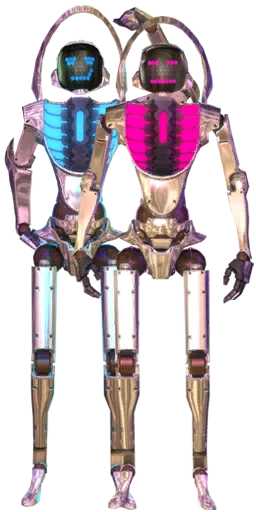
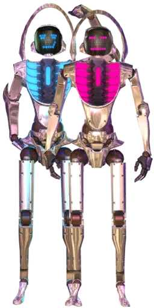

D-Cypher
D‑Cypher is a robotic dance crew created by Dr. Tan, appearing in both Dance Central 2 and Dance Central 3. In DC3, they return as a selectable crew and appear in Spectator Mode, imports, and routines originally from DC2. D‑Cypher is a pair of humanoid robots created by Dr. Tan to be “perfect dancers.”
D-Cypher Crew Members
CYPH‑56
- First appeared in Dance Central 2
- Competitive personality; “hates losing”
- Created by Dr. Tan to be a “perfect dancer”
- Appears in DC3 via imports and Spectator Mode
- Pink color scheme in DC3 videos
CYPH‑78
- Partner robot to CYPH‑56
- Blue color scheme in DC3 videos
- Featured in DC3 gameplay such as Tan Step on Hard mode
 
